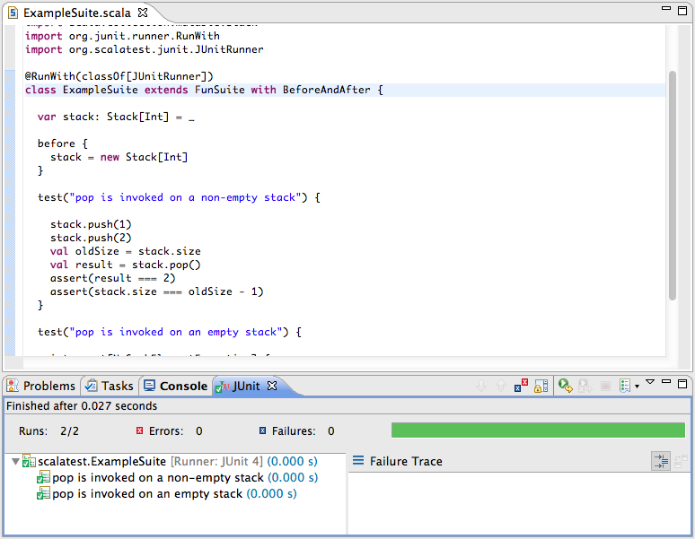
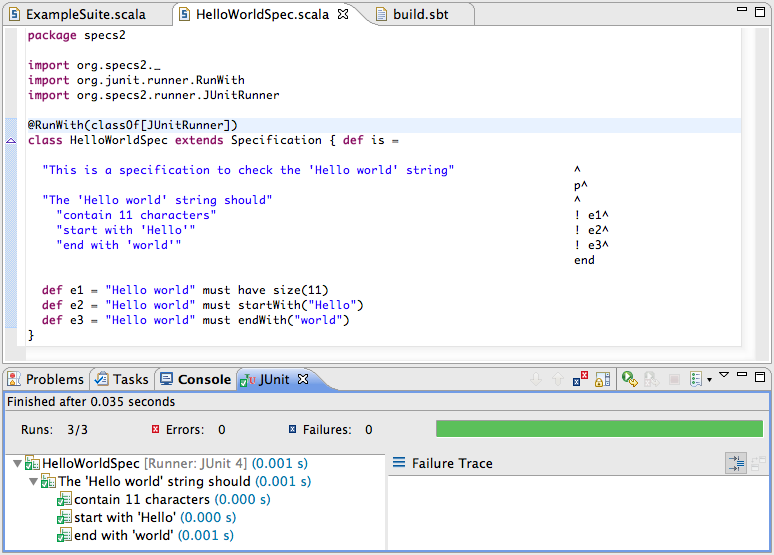

Using Unit Testing Frameworks
Test from multiple unit testing frameworks can be run inside Scala IDE, using the JUnit 4 runners provided by the frameworks
Setting up JUnit 4
Inside Eclipse
To add JUnit to a project from inside Eclipse, right-click on the project in the package explorer view, select Build Path → Add Libraries..., select JUnit, and then JUnit 4 in the next wizard page.
In sbt
To add JUnit in the sbt configuration, add the following dependency in the build.sbt file:
libraryDependencies ++= Seq(
"junit" % "junit" % "4.8.1" % "test"
)
In maven
To add JUnit in the maven configuration, add the following dependency in the pom.xml file:
<dependency>
<groupId>junit</groupId>
<artifactId>junit</artifactId>
<version>4.8.1</version>
<scope>test</scope>
</dependency>
Using JUnit 4
To run a test suite using JUnit in Scala IDE, open the source file of the test, right-click in it, and select Run as → JUnit Test.
You can re-run your test using the launch configuration which is automatically created. Check the Eclipse documentation for more details.
ScalaTest
The ScalaTest framework provides a runner (org.scalatest.junit.JUnitRunner) allowing to use JUnit to run the test suites.
Adding this annotation makes a ScalaTest test suite runnable with JUnit4:
@RunWith(classOf[JUnitRunner])
The test suite from the FunSuite example becomes the following when run in Scala IDE:
Specs
The Specs framework provides a runner (org.specs.runner.JUnitSuiteRunner) allowing to use JUnit to run the suites.
Adding this annotation makes a Specs suite runnable with JUnit4:
@RunWith(classOf[JUnitSuiteRunner])
For Specs2, the annotation is the following:
@RunWith(classOf[JUnitRunner])
The HelloWorldSpec example becomes the following when run in the Scala IDE:


{kind=link}
{kind=link}
{kind=link}